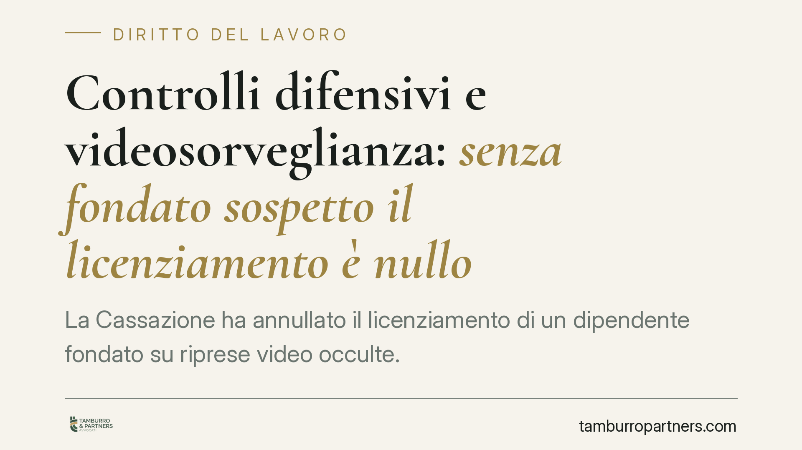

Controlli difensivi e videosorveglianza: senza fondato sospetto il licenziamento è nullo
La Cassazione ha annullato il licenziamento di un dipendente fondato su riprese video occulte. Il controllo difensivo, cioè la sorveglianza volta a scoprire illeciti, è legittimo solo in presenza di un fondato sospetto già maturato. Senza quel presupposto le immagini sono inutilizzabili e il recesso privo di prova cade. Una decisione che ridisegna i confini tra tutela del patrimonio aziendale e diritti del lavoratore.

Il caso
Un lavoratore di un supermercato viene licenziato sulla base di riprese effettuate da telecamere nascoste. La Corte d'Appello di Roma valida il recesso. La Cassazione ribalta l'esito: le immagini erano state acquisite senza un fondato sospetto preesistente e, quindi, non potevano essere utilizzate come prova. Venuta meno la base probatoria, il licenziamento è stato annullato.
La vicenda tocca un nodo pratico ricorrente: fino a che punto un datore di lavoro può installare sistemi di controllo occulti per difendere il proprio patrimonio?
Inquadramento normativo
La materia ruota attorno all'art. 4 dello Statuto dei lavoratori (L. 300/1970), che disciplina gli impianti audiovisivi e gli strumenti di controllo a distanza. La norma consente l'installazione solo per esigenze organizzative, produttive, di sicurezza del lavoro o di tutela del patrimonio aziendale, e subordina l'impiego ad accordo sindacale o autorizzazione dell'Ispettorato del lavoro.
Accanto a questo regime esiste la categoria dei cosiddetti controlli difensivi, elaborata dalla giurisprudenza. Sono controlli diretti non a verificare l'esatto adempimento della prestazione, ma ad accertare condotte illecite del lavoratore. La Cassazione ha progressivamente ristretto lo spazio di questa figura: il controllo difensivo occulto è ammesso solo quando il datore abbia già maturato un fondato sospetto di un illecito specifico. Non può servire a costruire un sospetto a posteriori, né a sorvegliare in modo generalizzato e preventivo.
È questo il principio ribadito dalla pronuncia della Sezione Lavoro: la sorveglianza nascosta senza un ragionevole indizio anteriore è vietata, e le prove così ottenute non entrano nel processo.
Implicazioni pratiche
Per il datore di lavoro il messaggio è netto. Non basta invocare la tutela del patrimonio per giustificare telecamere occulte. Occorre poter dimostrare che, prima di attivare il controllo, esisteva un sospetto concreto e circostanziato, riferito a fatti determinati e a soggetti individuabili. In mancanza, il licenziamento fondato su quelle immagini rischia la nullità o l'annullamento, con le conseguenze economiche e reintegratorie che ne derivano.
Per il lavoratore, la sentenza rafforza una garanzia: la dignità e la riservatezza non si sospendono varcando la soglia dell'azienda. Un controllo illegittimo non può trasformarsi in prova valida solo perché ha effettivamente intercettato una condotta scorretta. L'illecito processuale del datore contamina l'esito.
Restano fermi due profili distinti. Uno è la legittimità del controllo (rispetto dell'art. 4 e presenza del fondato sospetto). L'altro è l'utilizzabilità della prova nel giudizio di impugnazione del licenziamento. La Corte ha collegato i due piani: se il controllo è illegittimo, la prova non regge, e il recesso perde fondamento.
Cosa fare in concreto
- Datori di lavoro: prima di installare qualsiasi sistema di ripresa, verificate la copertura dell'art. 4 (accordo sindacale o autorizzazione dell'Ispettorato) e conservate traccia documentale delle esigenze che lo giustificano.
- Documentate il sospetto: se attivate un controllo difensivo occulto, cristallizzate per iscritto gli indizi già in vostro possesso, con data certa anteriore all'avvio della sorveglianza.
- Non estendete il controllo oltre lo stretto necessario: evitate riprese generalizzate, prolungate o indiscriminate su tutta la forza lavoro.
- Lavoratori: se avete ricevuto un licenziamento basato su immagini, verificate quando e con quali presupposti il controllo è stato attivato; l'assenza di un fondato sospetto anteriore è un profilo da valutare con attenzione.
- In entrambi i casi, consigliamo una verifica tecnico-giuridica preventiva prima di adottare provvedimenti o impugnarli: i termini di decadenza per contestare un licenziamento sono brevi.
Conclusioni
La decisione conferma una linea ormai consolidata: la tutela del patrimonio aziendale è un interesse legittimo, ma non giustifica una sorveglianza occulta priva di presupposti. Il fondato sospetto anteriore è il vero spartiacque tra controllo difensivo lecito e controllo vietato. Chi lo trascura rischia di trasformare una prova apparentemente solida in un vizio insanabile del procedimento disciplinare.
---
*Contributo informativo a cura di Tamburro & Partners - Avv. Giuseppe Tamburro. Non costituisce parere legale.*
Ogni storia di lavoro ha i suoi tempi.
Se gestisci HR e vuoi un confronto su contenzioso, ispezioni o licenziamenti, scrivi allo studio. Ti rispondiamo entro un giorno lavorativo.